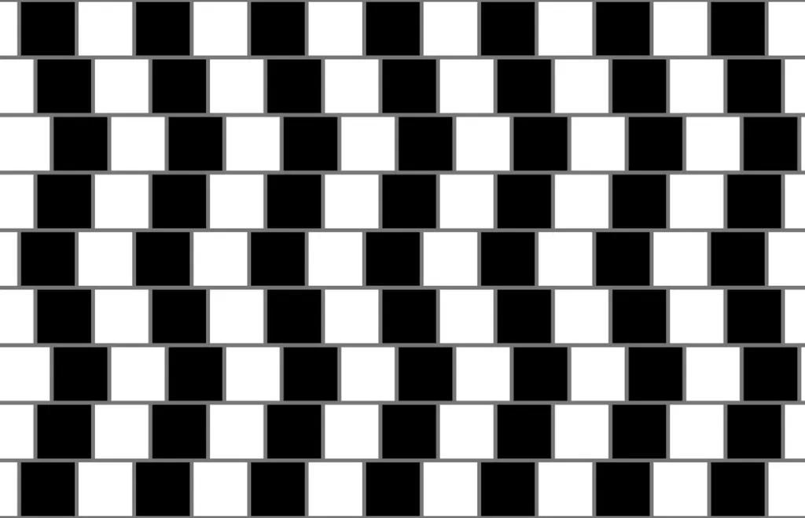

(Zdroj obrázku: Fibonacci, CC BY-SA 3.0, https://creativecommons.org/licenses/by-sa/3.0/deed.en)


Zeď v kavárně
Tato iluze ukazuje dlaždicovou stěnu, kde vodorovné čáry vypadají, jako by byly zkřivené nebo šikmé. Ve skutečnosti jsou ale všechny vodorovné čáry rovné a rovnoběžné. Jde jen o trik našeho vnímání, který způsobuje kontrast mezi černými a bílými dlaždicemi. Přesný důvod, proč iluze funguje tak silně, není úplně jistý, ale souvisí s tím, jak mozek zpracovává orientaci čar v zrakové kůře. Název pochází od výzkumníků z University of Bristol, kteří si tohoto efektu všimli na zdi kavárny v 70. letech.